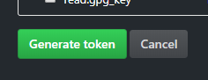
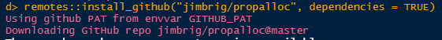

Property Allocation Shiny App Setup Guide
Jimmy Briggs
June 12, 2020
Source:vignettes/setup.Rmd
setup.RmdSetting up GitHub
In order to run the application locally, you will first need to install the propalloc R package and all of its dependencies on you machine first.
Because propalloc is a private Github repository, this means an additional step is necessary to access the repo for installation. This is done via the Githun Personal Access Token (PAT).
Creating and Storing your GitHub PAT
Get and store a PAT:
Sign up for a free GitHub.com account and sign in if you do not already have an account setup.
Verify the scopes and click “Generate token”.
Copy the token right away!
Store the copied token in your
.Renvironas the GITHUB_PAT environment variable.usethis::edit_r_environ()opens this file for editing.
Step-by-step:
First, install the usethis package via:
install.packages("usethis")To setup the PAT run the code below which simply checks for a PAT already on your machine, and if you do not have one, it opens the web-browser for you to set one up.
if (usethis::github_token() == "") {
usethis::browse_github_pat()
}On the webpage, first be sure to copy the token to your clipboard.
Next, simply scroll down and select “Generate Token”.

Now, move back into RStudio and run the code:
usethis::edit_r_environ()In the opened file, store the Github PAT as a system environment variable by assigning it the the key “GITHUB_PAT”. Here’s a screenshot of my Renviron:

Your’s should look the same but with the copied token after ‘GITHUB_PAT=’, for example:
Then save the .Renviron file (Ctrl + S) and restart RStudio (Ctrl+Shift+F10).
Install propalloc
Now that you have Github setup its time to install the R package.
You can install the production version of the app from the master branch, or a development version from the develop branch.
Code to install the package:
# for master branch
remotes::install_github("jimbrig/propalloc", dependencies = TRUE)
# for develop branch
remotes::install_github("jimbrig/propalloc", ref = "develop", dependencies = TRUE)If you get an error related to the auth_token then add this argument to the call:
remotes::install_github("jimbrig/propalloc",
dependencies = TRUE,
auth_token = "<your Github PAT>")If this works you should see something similar to this after running the command:

If prompted to update existing packages do so as you wish.
Lastly, you will need to install some additional packages by running propalloc’s custom function:
propalloc::install_app_dependencies()Finally, restart R one more time and to run the app run:
propalloc::run_app()